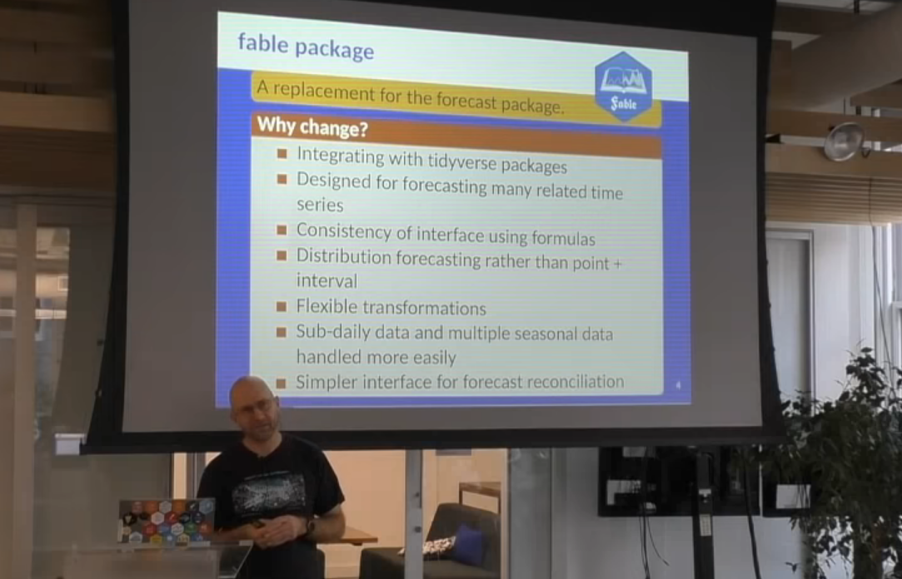
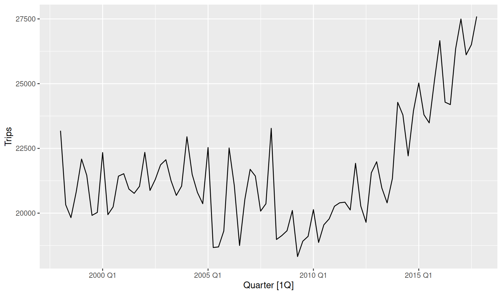
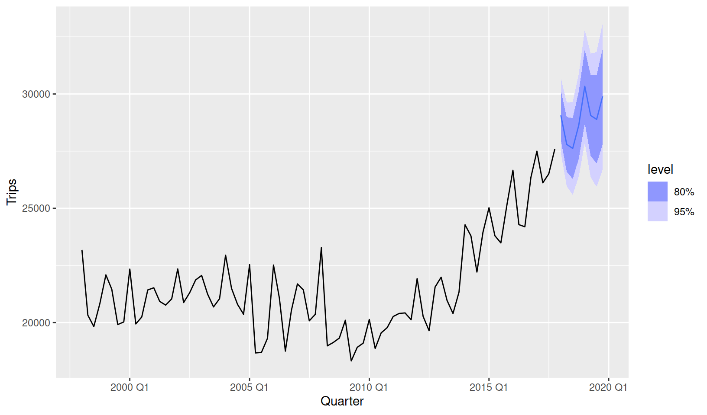
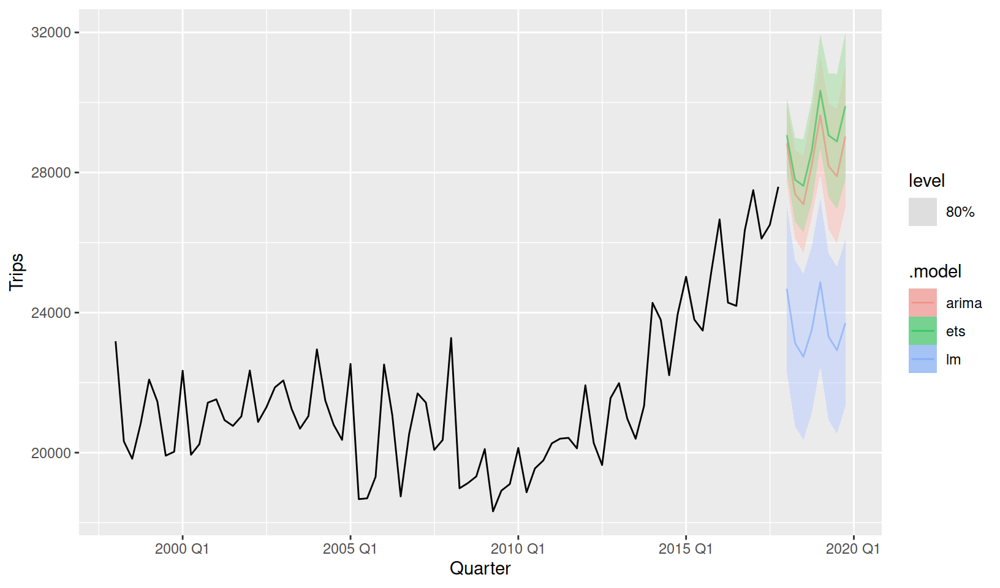
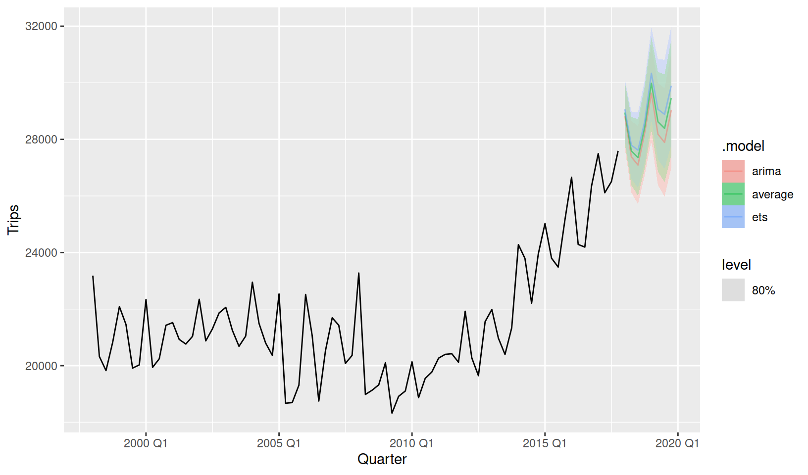
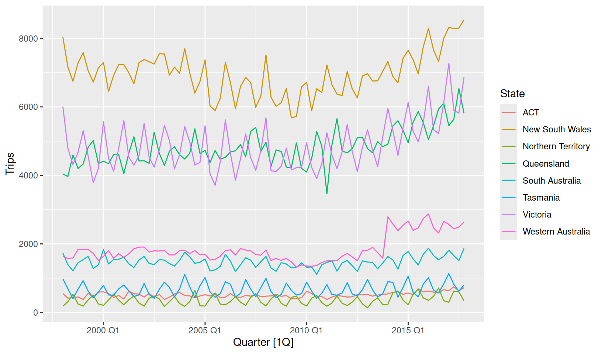
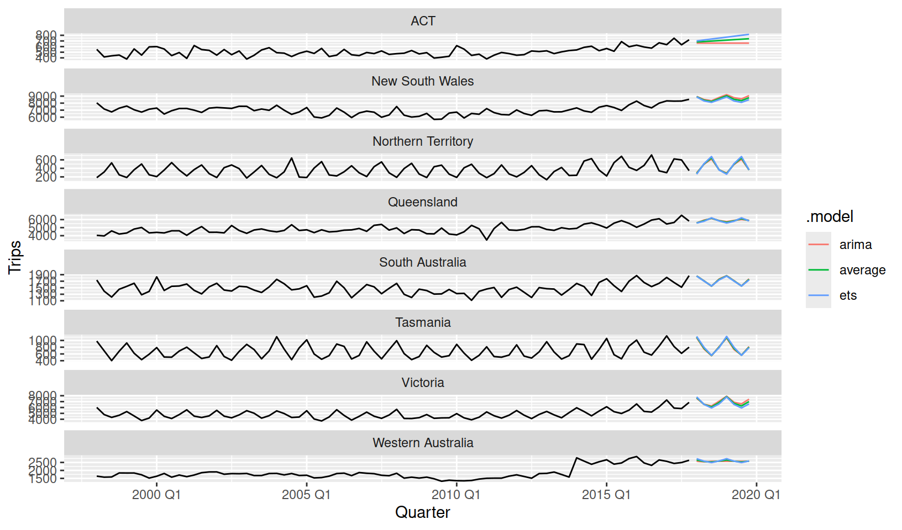

install.packages("fable")
The fable package bridges the gap between popular tidy data analysis workflows and time series forecasting. Using tidy temporal data from Earo Wang’s tsibble package, fable allows complex forecasting tasks to be performed with ease. The package is the next iteration of Rob Hyndman’s forecast package, providing the tools and extensibility support needed to overcome current and future time series challenges. I’m ecstatic to announce that the fable package is now available on CRAN! So whether you’re a seasoned forecasting fanatic or you’re making your first foray into forecasting, getting started is easier than ever:
fable: forecasting with tables
A major difference between fable and its predecessor forecast is the way in which time series data is stored. A substantial source of confusion for forecast package users is the creation and use of ts objects. The fable package is built upon the tsibble package, which (as the name suggests) is a tibble with time series structure. Among many benefits, the data is now in the same structure provided in most data files. This makes loading time series data into R a breeze (and less error-prone), as the column of data specifying the observation’s measurement time is now actually used in the data! Other benefits of a tabular data structure include integration with non-temporal packages and support for multiple time series with mixed measurement types.
A fable is never true, but it tells you something important about reality - and that’s what a forecast is.
Rob Hyndman (2018-06-21)
New York Open Statistical Programming Meetup (https://youtu.be/yx6OQ-8HofU?t=2484)

The fable package has been actively developed over the past two years, and has undergone a couple of substantial revisions to the interface prior to release. Despite these changes the package’s goals have remained constant:
- Seamlessly integrate within a tidy data analysis workflow.
- Provide a consistent, intuitive and familiar interface for time series modelling.
- Simple forecasting (and reconciliation) of many related time series.
- Encourage extensibility by developing general forecasting tools.
- Provide forecasts with distributions, not intervals.
- Naturally support sub-daily and high frequency data with complex structures.
The first release of fable implements all of these goals and more. While this post won’t cover the details of how these goals are achieved, I hope that the forecasting example below illustrates how these goals have been realised for forecasting in practice. I have no doubt that there will be many more blog posts which will explore fable in greater detail.
Forecasting with fable
library(tidyverse)
library(tsibble)
library(fable)To see how fable can be applied to real forecasting problems we’ll create some simple forecasts of Australia’s domestic tourism. This is the same dataset analysed in the Introducing feasts post, which provides a visual introduction to the data using the closely related feasts package.
Data manipulation and exploration
tourism# A tsibble: 24,320 x 5 [1Q]
# Key: Region, State, Purpose [304]
Quarter Region State Purpose Trips
<qtr> <chr> <chr> <chr> <dbl>
1 1998 Q1 Adelaide South Australia Business 135.
2 1998 Q2 Adelaide South Australia Business 110.
3 1998 Q3 Adelaide South Australia Business 166.
4 1998 Q4 Adelaide South Australia Business 127.
5 1999 Q1 Adelaide South Australia Business 137.
6 1999 Q2 Adelaide South Australia Business 200.
7 1999 Q3 Adelaide South Australia Business 169.
8 1999 Q4 Adelaide South Australia Business 134.
9 2000 Q1 Adelaide South Australia Business 154.
10 2000 Q2 Adelaide South Australia Business 169.
# i 24,310 more rowsThis dataset contains quarterly domestic overnight trips for a variety of locations and purposes around Australia. When disaggregated by the key variables (Region, State and Purpose), we have a total of 304 separate time series to forecast.
Let’s start simple and use dplyr to calculate the total overnight domestic trips for Australia.
tourism_aus <- tourism %>%
summarise(Trips = sum(Trips))
tourism_aus# A tsibble: 80 x 2 [1Q]
Quarter Trips
<qtr> <dbl>
1 1998 Q1 23182.
2 1998 Q2 20323.
3 1998 Q3 19827.
4 1998 Q4 20830.
5 1999 Q1 22087.
6 1999 Q2 21458.
7 1999 Q3 19914.
8 1999 Q4 20028.
9 2000 Q1 22339.
10 2000 Q2 19941.
# i 70 more rowsAt minimum, we should plot the data before considering a model for it. A tsibble dataset works seamlessly with ggplot2, allowing you to design informative graphics for this data. For a quick look at the data we also support autoplot() functionality (and more time series plots discussed in Introducing feasts).
tourism_aus %>%
autoplot(Trips)
The first step to forecasting this data would be to identify appropriate model(s). A seasonal model would be required as the data shows signs of seasonality. Including trend would also be helpful, although as the trend has changed over time (becoming positive after 2010) our model will need to support this too. Considering this, an exponential smoothing model may be suitable for this data.
Model specification
Model specification in fable supports a formula based interface (much like lm() and other cross-sectional modelling functions). A model formula in R is expressed using response ~ terms, where the formula’s left side describes the response (and any transformations), while the right describes terms used to model the response. The terms of a fable model often include model specific functions called ‘specials’. They describe how the time series dynamics are captured by the model, and the supported specials can be found in the method’s help file.
Exponential smoothing models are defined using the ETS() function, which provides ‘specials’ for controlling the error(), trend() and season(). These time series elements appear to be additively combined to give the response, and so an appropriate model specification may be:
ETS(Trips ~ error("A") + trend("A") + season("A"))Identifying an appropriate model specification can be tricky as it requires some background knowledge about temporal patterns and ETS models. Don’t be discouraged! If your unsure, you can let ETS() and other models automatically choose the best specification if multiple options are provided. So if you can’t tell if the seasonality is additive (season("A")) or multiplicative (season("M")), you can let fable decide via:
ETS(Trips ~ error("A") + trend("A") + season(c("A", "M")))In fact this automatic selection is the default option. If the season() special is not specified (excluded entirely from formula), the seasonal structure will be automatically chosen as either none, additive or multiplicative seasonality with season(c("N", "A", "M")). Automatic selection also occurs when error() and trend() are not specified, allowing an appropriate ETS model to be determined fully automatically with:
ETS(Trips)Model estimation
A model is estimated using the model() function, which uses a dataset to train one or more specified models.
fit <- tourism_aus %>%
model(auto_ets = ETS(Trips))
fit# A mable: 1 x 1
auto_ets
<model>
1 <ETS(A,A,A)>The resulting mable (model table) object informs us that an ETS(A,A,A) model has been automatically selected. Within that cell a complete description of the model is stored, including everything needed to produce forecasts (such as estimated coefficients). The report() function can be used if the mable contains only one model, which provides a familiar display of the models estimates and summary measures.
report(fit)Series: Trips
Model: ETS(A,A,A)
Smoothing parameters:
alpha = 0.4495675
beta = 0.04450178
gamma = 0.0001000075
Initial states:
l[0] b[0] s[0] s[-1] s[-2] s[-3]
21689.64 -58.46946 -125.8548 -816.3416 -324.5553 1266.752
sigma^2: 699901.4
AIC AICc BIC
1436.829 1439.400 1458.267 The package also supports verbs from the broom package, allowing you to tidy() your coefficients, glance() your model summary statistics, and augment() your data with predictions. These verbs provide convenient and consistent methods for accessing useful values from an estimated model.
Producing forecasts
The forecast() function is used to produce forecasts from estimated models. The forecast horizon (h) is used to specify how far into the future forecasts should be made. h can be specified with a number (the number of future observations) or text (the length of time to predict). You can also specify the time periods to predict using new_data, which allows you to provide a tsibble of future time points to forecast, along with any exogenous regressors which may be required by the model.
fc <- fit %>%
forecast(h = "2 years")
fc# A fable: 8 x 4 [1Q]
# Key: .model [1]
.model Quarter Trips .mean
<chr> <qtr> <dist> <dbl>
1 auto_ets 2018 Q1 N(29068, 7e+05) 29068.
2 auto_ets 2018 Q2 N(27794, 870750) 27794.
3 auto_ets 2018 Q3 N(27619, 1073763) 27619.
4 auto_ets 2018 Q4 N(28627, 1311711) 28627.
5 auto_ets 2019 Q1 N(30336, 1587455) 30336.
6 auto_ets 2019 Q2 N(29062, 1903591) 29062.
7 auto_ets 2019 Q3 N(28887, 2262980) 28887.
8 auto_ets 2019 Q4 N(29895, 2668392) 29895.You’ll notice that this function gives us a fable (forecast table), which contains point forecasts in the Trips column, and the forecast’s distribution in the .distribution column. If we had specified a transformation in the model specification (say ETS(log(Trips))), the resulting forecasts would be automatically back transformed and adjusted for bias.
While using and storing distributions is powerful, they can be more difficult to interpret than intervals. Forecast intervals can be extracted from a forecast distribution using the hilo() function:
fc %>%
hilo(level = c(80, 95))# A tsibble: 8 x 6 [1Q]
# Key: .model [1]
.model Quarter Trips .mean `80%`
<chr> <qtr> <dist> <dbl> <hilo>
1 auto_ets 2018 Q1 N(29068, 7e+05) 29068. [27995.95, 30140.25]80
2 auto_ets 2018 Q2 N(27794, 870750) 27794. [26597.85, 28989.59]80
3 auto_ets 2018 Q3 N(27619, 1073763) 27619. [26291.05, 28947.01]80
4 auto_ets 2018 Q4 N(28627, 1311711) 28627. [27158.76, 30094.28]80
5 auto_ets 2019 Q1 N(30336, 1587455) 30336. [28721.43, 31950.79]80
6 auto_ets 2019 Q2 N(29062, 1903591) 29062. [27293.57, 30829.90]80
7 auto_ets 2019 Q3 N(28887, 2262980) 28887. [26959.18, 30814.90]80
8 auto_ets 2019 Q4 N(29895, 2668392) 29895. [27801.09, 31987.98]80
# i 1 more variable: `95%` <hilo>Rather than reading values from a table, it is usually easier to evaluate forecast behaviour by making a plot. Much like plotting a tsibble, we have provided autoplot() and autolayer() methods for plotting forecasts. Unlike the forecast package, fable does not store the original data and fitted model in the fable object, so the historical data must be passed in to see it on the plot.
fc %>%
autoplot(tourism_aus)
Choosing the best model
While ETS() has been able to choose the best ETS model for this data, a different model class may give even better results. The model() function is capable of estimating many specified models. Let’s compare the ETS model with an automatically selected ARIMA() model (much like forecast::auto.arima()) and a linear model (TSLM()) with linear time trend and dummy seasonality.
fit <- tourism_aus %>%
model(
ets = ETS(Trips),
arima = ARIMA(Trips),
lm = TSLM(Trips ~ trend() + season())
)
fit# A mable: 1 x 3
ets arima lm
<model> <model> <model>
1 <ETS(A,A,A)> <ARIMA(0,1,1)(0,1,1)[4]> <TSLM>The mable now contains three models, each specified model is stored in a separate column.
We can produce forecasts and visualise the results using the same code as before. To minimise overplotting I have chosen to only show the 80% forecast interval, and have made the forecasts semi-transparent.
fit %>%
forecast(h = "2 years") %>%
autoplot(tourism_aus, level = 80, alpha = 0.5)
It is clear from this plot that the linear model (lm) is unable to capture the trend change at 2010. The linear model could be improved by using a piecewise linear trend with a knot at 2010, but I’ll leave that for you to try (replace trend() with trend(knots = yearquarter("2010 Q1"))).
Visually distinguishing the best model between ETS and ARIMA is difficult. The ETS model predicts a stronger trend than the ARIMA model, and both produce very similar seasonal patterns.
To choose the best model we can make use of numerical accuracy measures using the accuracy() function. This function can compute various accuracy measures based on point forecasts, forecast intervals and forecast distributions. It also allows you to specify your own accuracy measure functions.
Training (in-sample) accuracy will be given when applied to a mable.
accuracy(fit)# A tibble: 3 x 10
.model .type ME RMSE MAE MPE MAPE MASE RMSSE ACF1
<chr> <chr> <dbl> <dbl> <dbl> <dbl> <dbl> <dbl> <dbl> <dbl>
1 ets Training 1.05e+ 2 794. 604. 0.379 2.86 0.636 0.653 -0.00151
2 arima Training 1.54e+ 2 840. 632. 0.584 2.97 0.666 0.691 -0.0432
3 lm Training -1.82e-13 1715. 1436. -0.597 6.67 1.51 1.41 0.816 The in-sample accuracy suggests that the ETS model performs best. This is because it has the lowest values for all accuracy measures (lower values indicate less errors). As expected, the linear model is much worse than the others.
Forecast (out-of-sample) accuracy will be computed when a fable is used with accuracy(). Note that you will need to withhold a test set to base your accuracy on.
tourism_aus %>%
# Withhold the last 3 years before fitting the model
filter(Quarter < yearquarter("2015 Q1")) %>%
# Estimate the models on the training data (1998-2014)
model(
ets = ETS(Trips),
arima = ARIMA(Trips),
lm = TSLM(Trips ~ trend() + season())
) %>%
# Forecast the witheld time peroid (2015-2017)
forecast(h = "3 years") %>%
# Compute accuracy of the forecasts relative to the actual data
accuracy(tourism_aus)# A tibble: 3 x 10
.model .type ME RMSE MAE MPE MAPE MASE RMSSE ACF1
<chr> <chr> <dbl> <dbl> <dbl> <dbl> <dbl> <dbl> <dbl> <dbl>
1 arima Test 1397. 1795. 1452. 5.31 5.54 1.58 1.49 0.496
2 ets Test 1895. 2281. 1909. 7.23 7.28 2.08 1.90 0.613
3 lm Test 4664. 4822. 4664. 18.1 18.1 5.09 4.01 0.634The out-of-sample accuracy shows that the ARIMA model produced the most accurate forecasts for 2015-2017 using data from 1998-2014.
So which model is best? In-sample (training) accuracy uses one-step ahead forecast errors from model coefficients based on the whole data. In many senses this is unrealistic, as the forecasts are partially based on information not available when forecasting into the future. Additionally, these forecasts are based only on one-step ahead accuracy, where in practice you may be interested in forecasting a few years ahead.
Alternatively, out-of-sample (test) accuracy is more akin to the actual forecasting task: predicting the future using only past information. The accuracy is based on forecast errors from three years of data never seen by the model. This advantage is also a problem, as the accuracy is now based on just 12 values, so the performance is more sensitive to chance. Calculating accuracy using time series cross-validation overcomes many of these problems, but will take more time to compute.
In short, both ETS and ARIMA models are producing reasonable forecasts for this data. Instead of choosing a favourite, we can do better by averaging them which usually gives better results.
fit <- tourism_aus %>%
model(
ets = ETS(Trips),
arima = ARIMA(Trips)
) %>%
mutate(
average = (ets + arima) / 2
)
fit# A mable: 1 x 3
ets arima average
<model> <model> <model>
1 <ETS(A,A,A)> <ARIMA(0,1,1)(0,1,1)[4]> <COMBINATION>fit %>%
forecast(h = "2 years") %>%
autoplot(tourism_aus, level = 80, alpha = 0.5)
Scaling it up
Producing forecasts for a single time series isn’t particularly exciting, and certainly doesn’t align well with modern forecasting problems. Suppose we were interested in forecasting tourism for each of Australia’s major states (and territories).
tourism_state <- tourism %>%
group_by(State) %>%
summarise(Trips = sum(Trips))
tourism_state# A tsibble: 640 x 3 [1Q]
# Key: State [8]
State Quarter Trips
<chr> <qtr> <dbl>
1 ACT 1998 Q1 551.
2 ACT 1998 Q2 416.
3 ACT 1998 Q3 436.
4 ACT 1998 Q4 450.
5 ACT 1999 Q1 379.
6 ACT 1999 Q2 558.
7 ACT 1999 Q3 449.
8 ACT 1999 Q4 595.
9 ACT 2000 Q1 600.
10 ACT 2000 Q2 557.
# i 630 more rowsThe data now contains 8 separate time series, each with different time series characteristics:
tourism_state %>%
autoplot(Trips)
This is where the automatic model selection in fable is particularly useful. The model() function will estimate a specified model to all series in the data, so producing many models is simple.
fit <- tourism_state %>%
model(
ets = ETS(Trips),
arima = ARIMA(Trips)
) %>%
mutate(
average = (ets + arima)/2
)
fit# A mable: 8 x 4
# Key: State [8]
State ets arima average
<chr> <model> <model> <model>
1 ACT <ETS(M,A,N)> <ARIMA(0,1,1)> <COMBINATION>
2 New South Wales <ETS(A,N,A)> <ARIMA(0,1,1)(0,1,1)[4]> <COMBINATION>
3 Northern Territory <ETS(M,N,M)> <ARIMA(1,0,1)(0,1,1)[4]> <COMBINATION>
4 Queensland <ETS(A,N,A)> <ARIMA(2,1,2)> <COMBINATION>
5 South Australia <ETS(M,N,A)> <ARIMA(1,0,1)(0,1,1)[4]> <COMBINATION>
6 Tasmania <ETS(M,N,M)> <ARIMA(0,0,3)(2,1,0)[4]> <COMBINATION>
7 Victoria <ETS(M,N,M)> <ARIMA(0,1,1)(0,1,1)[4]> <COMBINATION>
8 Western Australia <ETS(M,N,M)> <ARIMA(0,1,3)> <COMBINATION>Each row of a mable corresponds to a separate time series (uniquely identified by its keys). From the output we can see a wide variety of models have been chosen. Some models have trend, others have seasonality, some have neither trend nor seasonality!
Producing forecasts and evaluating accuracy is no different whether you’re modelling one time series or a hundred.
fit %>%
forecast(h = "2 years") %>%
autoplot(tourism_state, level = NULL)
Extensibility with fabletools
Extensibility is at the core of fable. fable is actually built as an extension of the more general fabletools package. This allows extension modelling package developers to focus on writing methods specific to their model. More general methods used in modelling and forecasting are provided automatically by fabletools.
Depending on the chosen model, the following features are supported:
- Forecasting (
forecast()) - Missing value interpolation (
interpolate()) - Reporting model output (
report()) - Simulation of future paths (
generate()) - Streaming new data (
stream()) - Re-estimation (
refit()) - Decomposition of model components (
components()) - Model equation output (
equation()) - Broom verbs (
augment(),coef()/tidy(),glance()) - Model fits (
fitted(),residuals())
General fabletools functionality for all models include:
- Seamless integration with existing packages in the tidyverse
- Tools for consistent modelling interface design (such as formula parsing)
- Response transformations and back-transformations with bias adjustment
- Batch modelling with parallelisation
- Forecast distributions and intervals
- Visualisation of time series, decompositions, and forecasts (
autoplot()) - Accuracy evaluation (
accuracy()) with many accuracy measures - Model combination (
combination_model()/(ets + arima)/2) - Decomposition modelling (
decomposition_model()) - Forecast reconciliation (
reconcile(),min_trace())
Keep an eye out for more extension modelling packages being released this year!
Read more about fable
While this blog post is long and covers a lot of things about forecasting with fable, it is far from comprehensive. Currently, the best resource for learning forecasting with fable is the Forecasting: Principles and Practices (3ed.) book, which is freely available online.
Some other places with more information about fable include:
- The pkgdown website
- Rob Hyndman’s blog post: Tidy forecasting in R
- The Introduction to fable vignette
- UseR!2019 talk: Flexible futures for fable functionality
- The GitHub repository
Citation
BibTeX citation:
@online{o'hara-wild2019,
author = {O’Hara-Wild, Mitchell},
title = {Introducing Fable},
date = {2019-09-30},
url = {https://mitchelloharawild.com//blog/fable},
langid = {en}
}
For attribution, please cite this work as:
O’Hara-Wild, Mitchell. 2019. “Introducing Fable.” September
30, 2019. https://mitchelloharawild.com//blog/fable.